기초공사 상세순서
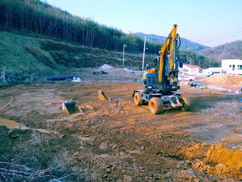
터파기 준비작업 ▲
측량 실시/ 주변 배수/ 터파기(장비: 백호) 실시
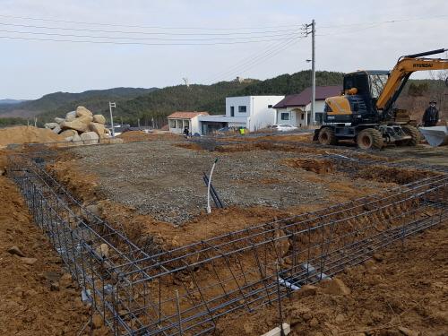
뼈대부분 줄기초 ▲
터파기 및 철근조립
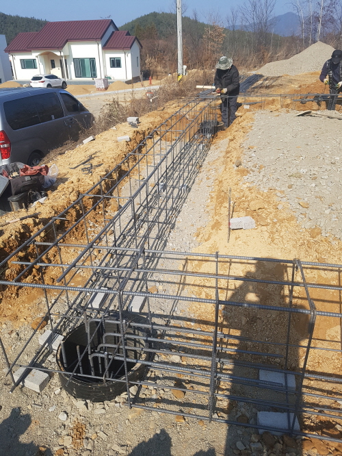
기초지반 보강부분 파일 기초
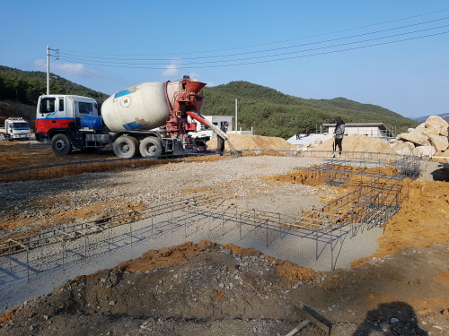
줄기초 콘크리트 타설 ▲
타설중
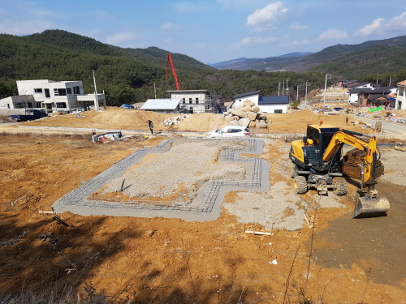
줄기초 콘크리트 타설 ▲
타설완료/ 지열용 파이프선 매몰
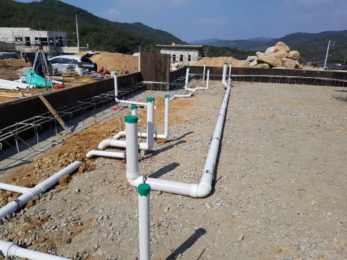
배수파이프 설치 ▲
주방, 욕실 부분
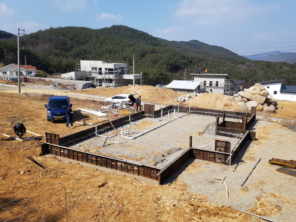
배수파이프 설치 ▲
전체 사진
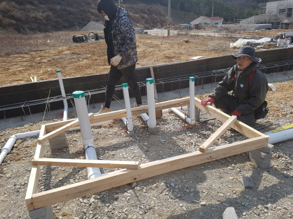
배수파이프 설치 ▲
욕실등 상세
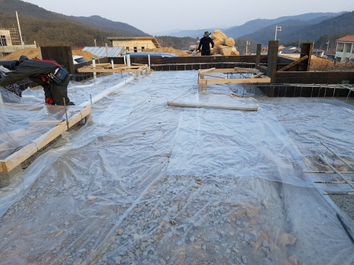
바닥비닐깔기 공사 ▲
습기차단, 품질관리등
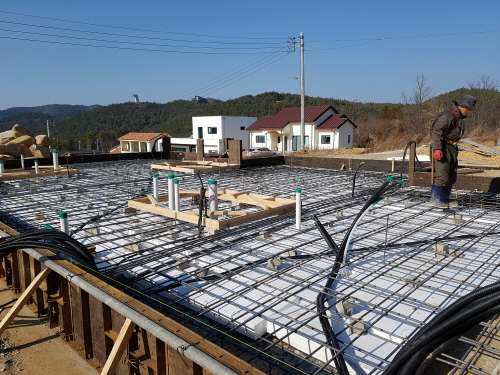
철근 및 유틸리티 공사 ▲
스티로플, 철근, 전선파이프등 설치
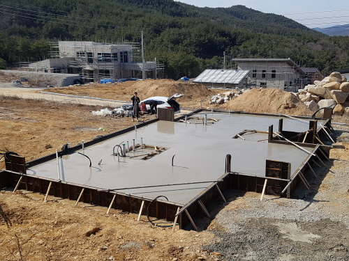
콘크리트 타설 공사 ▲
타설후 양생기간을 거처 골조작업
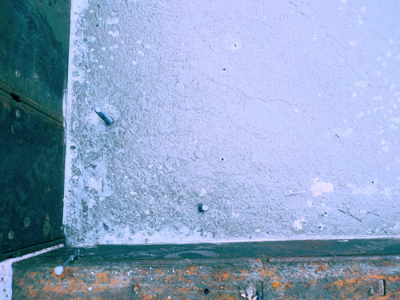
스터드 볼트 매입(코너부위) ▲
미리 매입해야 튼튼하다
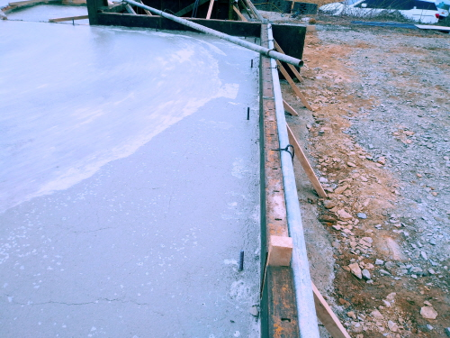
스터드 볼트 매입(직선부위) ▲
미리 매입되어 잘되어 있다
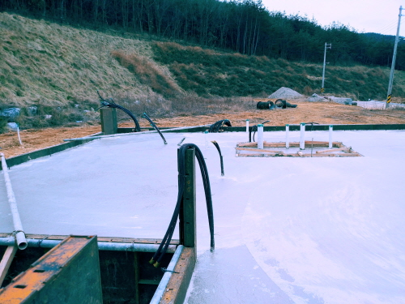
전기용 파이프 및 배수파이프 ▲
타설전 매입하여 노출되어 있다